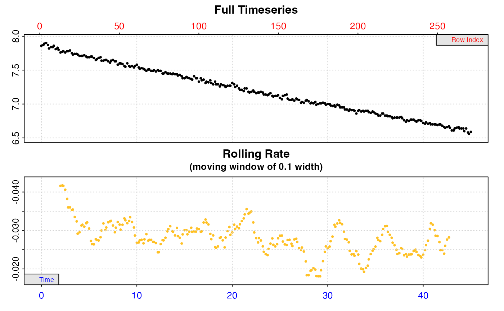

R/convert_val.R
convert_val.RdThis is a basic function that converts values of temperature, volume, mass,
area, and atmospheric pressure to different units. This can be useful in
convert_DO(), convert_rate(), and convert_rate.ft() where some inputs
must be in specific units (e.g. temperature in °C, atmospheric pressure in
bar, area in m2). See Examples.
convert_val(x, from = NULL, to = NULL)numeric value or vector. Values to be converted to a different unit.
string. Unit of the original values.
string. Unit to be converted to. These defaults are applied if left
NULL: volume "L", temperature "C", mass "kg", area "m2", pressure
"bar".
Output is a numeric vector of converted values.
Note the type of unit does not need to be specified. The function will
automatically recognise it using the from unit.
If the 'to' input is left NULL, the following defaults are applied
depending on the unit type of the from input:
volume: "L"
temperature: "C"
mass: "kg"
area: "m2"
pressure: "bar"
A fuzzy string matching algorithm is used to accept different unit formatting
styles. For example, "msq" "m2", "M2", "sqm" are all parsed as metres
squared of area.
Temperature:
"C", "K", "F"
Pressure:
"kPa", "hPa", "Pa", "ubar", "mbar", "bar", "Torr", "atm"
(note, this is standard atmospheres).
Volume:
"uL", "mL", "L"
Mass:
"ug", "mg", "g", "kg"
Area:
"mm2", "cm2", "m2", "km2"
For additional help, documentation, vignettes, and more visit the respR
website at https://januarharianto.github.io/respR/
# Convert volume
convert_val(10, "ml", "L")
#> [1] 0.01
convert_val(10:15, "ml", "L")
#> [1] 0.010 0.011 0.012 0.013 0.014 0.015
# Convert temperature
convert_val(-273.15, "C", "K")
#> [1] 0
convert_val(-40, "C", "F")
#> [1] -40
convert_val(c(2,4,6,8), "C", "F")
#> [1] 35.6 39.2 42.8 46.4
# Convert pressure
convert_val(1, "atm", "bar")
#> [1] 1.013253
convert_val(1010, "hpa", "bar")
#> [1] 1.01
convert_val(735, "torr", "kpa")
#> [1] 97.99216
# Convert area
convert_val(100, "cm2", "m2")
#> [1] 0.01
convert_val(10000, "mm2", "cm2")
#> [1] 100
# Convert mass
convert_val(200, "g", "kg")
#> [1] 0.2
convert_val(10000, "ug", "mg")
#> [1] 10
# Use directly in a respR function which requires inputs to be
# in a specific unit. For example, in convert_rate() pressure
# must be in 'bar' and respirometer volume in 'L'.
# Here, we know chamber volume is 200 ml, and pressure measured in mbar.
x <- suppressWarnings(inspect(urchins.rd, 1, 2))
#> inspect: Data issues detected. For more information use print().
#>
#> # print.inspect # -----------------------
#> time.min a
#> numeric pass pass
#> Inf/-Inf pass pass
#> NA/NaN pass pass
#> sequential pass -
#> duplicated pass -
#> evenly-spaced WARN -
#>
#> Uneven Time data locations (first 20 shown) in column: time.min
#> [1] 1 2 3 4 5 6 7 8 9 10 11 12 13 14 15 16 17 18 19 20
#> Minimum and Maximum intervals in uneven Time data:
#> [1] 0.1 0.2
#> -----------------------------------------

rate <- calc_rate(x, from = 20, to = 30)
convert_rate(rate,
oxy.unit = "ml/l",
time.unit = "min",
output.unit = "mg/h",
volume = convert_val(200, "ml", "L"),
S = 35,
t = 15,
P = convert_val(1010, "mbar", "bar"))
#> convert_rate: Object of class 'calc_rate' detected. Converting all rates in '$rate'.
#>
#> # print.convert_rate # ------------------
#> Rank 1 of 1 rates:
#>
#> Input:
#> [1] -0.02721958
#> [1] "mL/L" "min"
#> Converted:
#> [1] -0.4410976
#> [1] "mgO2/hr"
#>
#> To see full results use summary().
#> -----------------------------------------
# Note, the default 'to' units are set to those respR requires in
# these functions ('L' and 'bar' here), so do not necessarily need
# to be specified:
convert_rate(rate,
oxy.unit = "ml/l",
time.unit = "min",
output.unit = "mg/h",
volume = convert_val(200, "ml"),
S = 35,
t = 15,
P = convert_val(1010, "mbar"))
#> convert_rate: Object of class 'calc_rate' detected. Converting all rates in '$rate'.
#>
#> # print.convert_rate # ------------------
#> Rank 1 of 1 rates:
#>
#> Input:
#> [1] -0.02721958
#> [1] "mL/L" "min"
#> Converted:
#> [1] -0.4410976
#> [1] "mgO2/hr"
#>
#> To see full results use summary().
#> -----------------------------------------